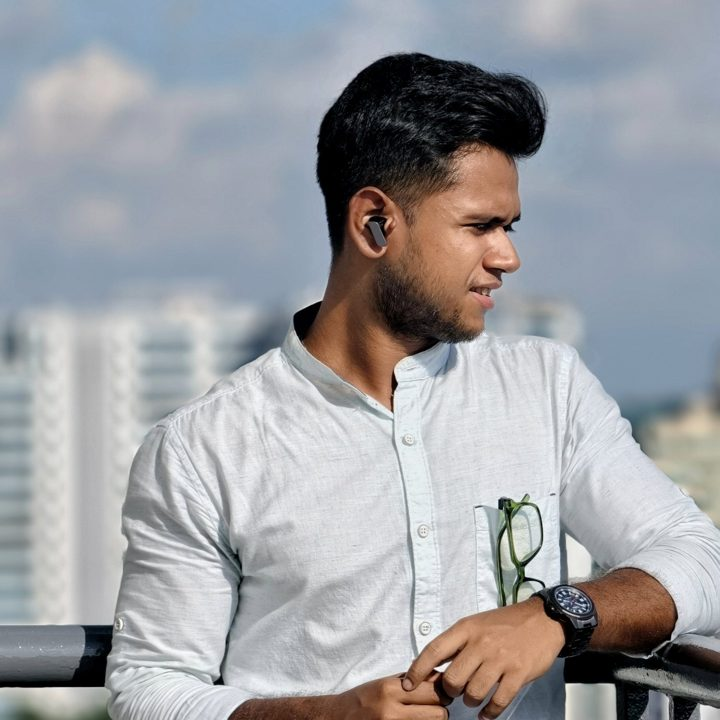

The dots are incident reports, news articles and student questions grouped by meaning. Move your cursor through them.
I’m a Data Scientist on the AI Engineering team at Mitsui O.S.K. Lines (MOL IT) in Kolkata. I build search, question-answering and summarisation systems on Azure OpenAI that save analysts hours of reading.
My day-to-day is Python, FastAPI, RAG pipelines and Azure Functions. I started in classical machine learning and NLP, and I still reach for simple, explainable methods when they work.
Tap a role to open it.
Pick a skill to see which projects use it.
Choose an area to see my skill levels.
Levels are self-assessed: Advanced 85+, Proficient 70–84, Working below 70.
Each card opens the certificate.
Open to conversations about GenAI, data science and cloud roles.
rsoumya0206@gmail.com